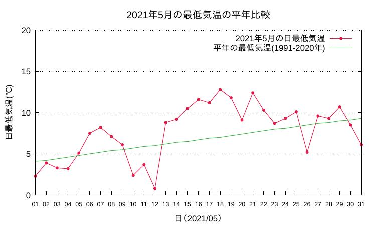

花豆2021 – 播種から定植まで
1 今年は最低の年でした

2 経過
3 苗が足りない！
発芽と初生葉率の状態を見ていて、どう考えても5月末までに必要な苗数(＝32苗)が揃いそうもなかったので、
大急ぎで追加の種を撒きました。
第1回追加は10ポット(05/24)、第2回追加は7ポット(05/31)でした。どちらも発芽が悪くハラハラしました。しかし、06/07にはなんとか不足分の4苗を畑に定植することができました。
4 原因は寒波？
今年は5月中旬から下旬にかけて、北関東から東北地方の広い範囲でリンゴやサクランボなどがひどい冷害・霜害にあって大きな被害を受けました。 個人的にも、なんとなく5月中下旬の北群馬は寒かったような印象があります。 そこで05/19以降の北群馬が、平年に比べてどの程度寒かったかを確認するために アメダス のデータを見てみました。
5 アメダスデータをみると・・・
群馬県の藤原アメダス(注2)の気温データを気象庁のページからもらってきて、今年の5月の日々の気温変動を 過去30年 (1991〜2020年)の平均気温と比べて見ました（図2）。
図2: 日平均気温の平年（1991〜2020年の平均）との比較（群馬県藤原アメダス）
これを見ると、意外にも2021年が極端に低温だったようには見えません。05/19以降では2日間（05/26, 05/27）は平年より低温ですが、極端な低温には見えません。
地元の農家のみなさんが、今年は夜の低温がきつい、という話をされていたのを思い出し、 もしかしたら平均気温ではなくて 最低気温 が関係しているのかも？と思い、今年の5月の最低気温と過去30年の最低気温とを比べてみました（図3）。

図3: 今年の最低気温と過去30年の最低気温の比較（群馬県藤原アメダス）
この図を見ると、05/26だけはガクンと落ちてはいますが、その日を除けば今年の最低気温がとくに平年に比べて顕著に低いという風には見えません(注3)。
どうも低温は今年の発芽率の低さの 主な原因 ではないようです(注4)。
6 では何が原因？
寒波のせいではないとしたら、何でしょうか。
一つの可能性は、
もしかしたら今年は花豆の 種の品質 が良くなかったのかもしれません。今年も例年どおり農協で1kgの種を購入し、それをガラステーブルの上に広げて厚みと大きさの順に40数粒の種を選びました。しかし目視では判別できない何か別の要因があった可能性はあります。
その他に思いつくのは、今年初めて試みた播種前の種の 6時間水浸 。 これについて、GoogleScholoarでちょっとあたって見ました。そうすると次のような記述がありました（有馬,1986）:
播種前に水浸してはいけない。初が不良になったり不揃いになる危険がある。英国の資料によると水浸中に病菌が種子に蔓延するという。
どうやら花豆の種を種まき前に水浸するのは芳しくないようです。
具体的なデータがどうなっているかもっと詳しく知りたかったのですが、有馬(1986)論文にも「英国の資料」が何かは書かれていませんし、 GoogleScholarで検索しても、花豆の種を水浸することが発芽にどんな影響を及ぼすか、というような 素朴な 問題をあつかった論文は見つけることができませんでした(注5)。
ま、紳士危うきに近寄らずということで、今後は面白半分に新しいことをやるのは控えようと思います:sweat:
7 開花しました
こんなふうに紆余曲折がありましたが、ありがたいことに今年も例年通り開花しました。
図4: 梅雨の曇り空と花豆の花
8 Acknowledgment
- 有馬博 (1987). ベニバナインゲンの栽培方法. 信州大学農学部農場報告, (4), 1-11.
- Ogilvie, L., & Mulligan, B. O. (1935). Vegetable Diseases: A Survey of Recent Work at Long Ashton. Scientific Horticulture, 3, 119-125.
9 Footnotes:
脚注:
豆の発芽にはいろいろなタイプがあるようです。たとえば 豆の出芽(公益財団法人 日本豆類協会) によれば、花豆は双葉（子葉）は地上には出ず地下にとどまったまま上胚軸が伸びるタイプの中でも初生葉を展開した後に本葉を出す部類に入るので、 最初に開く2枚の葉のことを俗に双葉（子葉）と言いますが、 花豆の場合には正しくは 初生葉 （はつしょうよう）と言うべきものです。
畑の場所は片品村ですが最も近い場所のアメダスが 藤原 になります。標高差が250メートル超ありますので、畑のほうが平均温度は1.5℃程度低いと思います。
生物には生育の過程でいろいろな形のcritical periodがあります。もしかしたら種にとって発芽前のある特定のタイミングでの温度が特別に重要な効果があるのかもしれません。
基本的には気温が低くても発芽日が遅れるだけです。しかし今年のように day9 以降、まったく発芽が進行しなかったというのは初めての経験でした。
もっと時間をかけて綿密に調べればあったのでしょうが・・・。